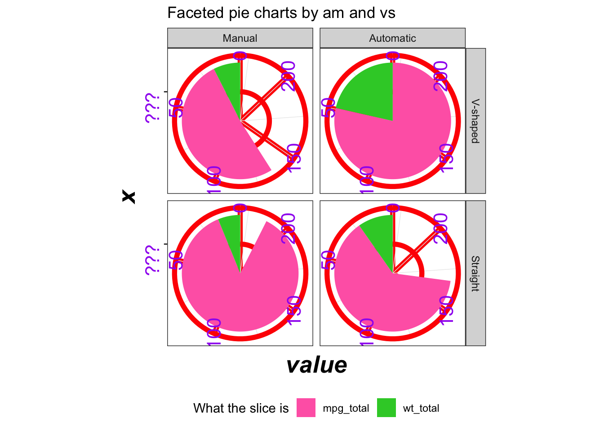
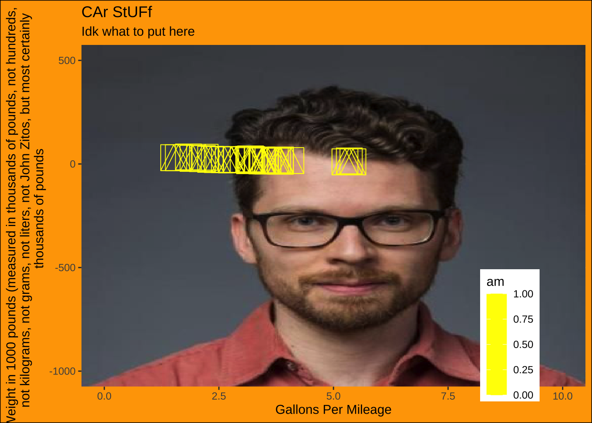
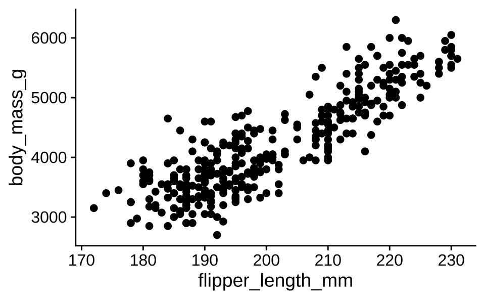
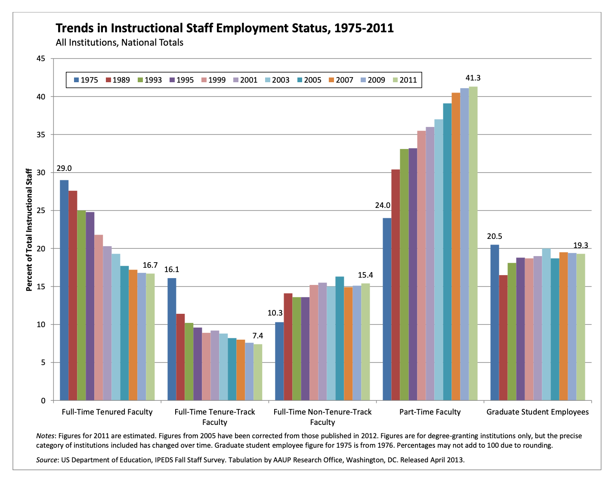
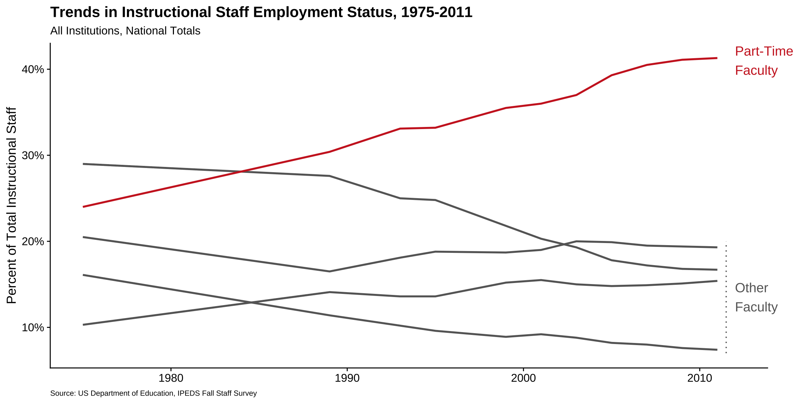
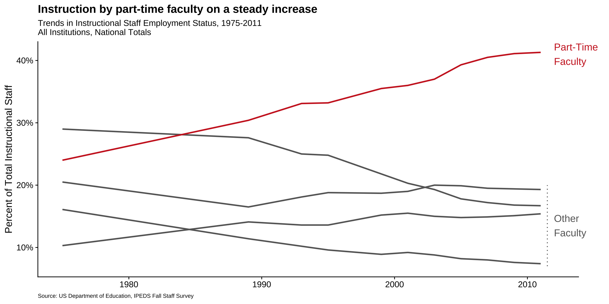

Your first peer evaluation for your project is due at midnight tonight. You should have received an e-mail from TEAMMATES about it (check your junk folder!). Did you complete it yet?
Yes
No
Scan the QR code or go HERE. Log in with your Duke NetID.
Reminder
Project feedback returned today;
Make progress (clean, plot, summarize) by Wednesday night;
Thursday lab: continue to work and give another team feedback;
Friday: complete midsemester check-in;
Friday: Midterm 1 grades returned.
Forget this class exists during spring break. After we return, our last six weeks are about statistical modeling and inference.
Ugly plot
Honorable mention: Ben Mei-Dan
Code
mtcars |>mutate(am =factor(am,levels =c(1, 0),labels =c("Manual", "Automatic"))) |>mutate(vs =factor(vs, levels =c(0,1),labels =c("V-shaped", "Straight"))) |>group_by(am, vs) |>summarize(mpg_total =sum(mpg), wt_total =sum(wt), .groups ="drop") |>pivot_longer(cols =c(mpg_total, wt_total),names_to ="metric",values_to ="value") |>ggplot(aes(x ="", y = value, fill = metric)) +geom_col(show.legend =TRUE) +coord_polar(theta ="y") +facet_grid(vs ~ am) +labs(title ="Faceted pie charts by am and vs",fill ="What the slice is" ) +scale_fill_manual(values =c("hotpink", "limegreen")) +scale_y_reverse() +scale_x_discrete(labels =c("???")) +theme_bw() +theme(legend.position ="bottom",axis.text =element_text(angle =90, size =16, color ="purple"),axis.title =element_text(size =20, face ="bold.italic"),panel.grid.major =element_line(color ="red", size =2) )

Honorable mention: Celina Chen
Code
ggplot( mtcars,aes(x = wt,y = mpg,color =factor(am, levels =c(1, 0)),shape =factor(vs, levels =c(1, 0)) )) +# Giant points + jitter = chaosgeom_point(size =9,alpha =0.95,stroke =2,position =position_jitter(width =0.25, height =1.5) ) +# Overlapping labels for maximum visual paingeom_text(aes(label =row.names(mtcars)),size =3,angle =45,vjust =-0.4,show.legend =FALSE ) +# Fragment into panelsfacet_wrap(~cyl, nrow =1) +# Reverse + weird limits + tons of minor breaksscale_x_reverse(limits =c(5.5, 1.5),breaks =seq(5.5, 1.5, -0.5),minor_breaks =seq(5.5, 1.5, -0.1) ) +# Reverse + log transform = extra confusingscale_y_reverse(trans ="log10",limits =c(35, 8),breaks =c(35, 30, 25, 20, 15, 10, 8) ) +# Weaponized color choices + misleading labelsscale_color_manual(values =c("magenta2", "chartreuse3"),labels =c("AUTO??", "MANUAL??"),guide =guide_legend(reverse =TRUE, title.position ="top") ) +# Aggressive shapes that don’t help interpretationscale_shape_manual(values =c(8, 4),labels =c("Vampire Engine", "Sauron Engine") ) +# Turn a scatterplot into a donut of confusioncoord_polar(theta ="x") +labs(title ="💀 MPG vs WT (but in a cursed universe) 💀",subtitle ="Why read a scatterplot when you can suffer?",x ="WEIGHT (1000 lbs)\n(reversed & spun into a donut)",y ="Miles / gallon (log10, reversed, vibes only)",color ="Transmission (maybe)",shape ="Engine (definitely not)",caption ="Data: mtcars • Design: pure spite" ) +theme(# Use safe fonts so Quarto can render (no Comic Sans errors)text =element_text(family ="sans"),plot.background =element_rect(fill ="hotpink", color ="limegreen", linewidth =8),panel.background =element_rect(fill ="yellow", color ="cyan", linewidth =6),panel.grid.major =element_line(color ="red", linewidth =2, linetype ="dotdash"),panel.grid.minor =element_line(color ="blue", linewidth =1, linetype ="longdash"),strip.background =element_rect(fill ="black", color ="white", linewidth =3),strip.text =element_text(color ="orange", size =18, face ="bold.italic"),axis.text =element_text(color ="purple", size =16, face ="bold", angle =90, vjust =0.5),axis.title =element_text(color ="green4", size =22, face ="bold"),plot.title =element_text(color ="white", size =28, face ="bold", hjust =0),plot.subtitle =element_text(color ="black", size =14, face ="italic", hjust =1),legend.position =c(0.15, 0.85),legend.background =element_rect(fill ="white", color ="black", linewidth =2),legend.key =element_rect(fill ="grey10"),legend.text =element_text(color ="dodgerblue", size =14),legend.title =element_text(color ="red", size =16, face ="bold"),plot.margin =margin(5, 60, 5, 60) )
library(jpeg)mtcars_categorical <- mtcars |>mutate(transmission =case_when( am ==0~"Automatic", am ==1~"Manual" ),engine =case_when( vs ==0~"V-shaped", vs ==1~"straight" ) )url <-"https://scholars.duke.edu/profile-images/thumbnail500/0935990.jpg"tmp <-tempfile(fileext =".jpg")download.file(url, tmp, mode ="wb")img <-readJPEG(tmp)ggplot(mtcars_categorical, aes(x = wt, y = mpg, color = am)) +annotation_raster( img,xmin =-Inf, xmax =Inf,ymin =-Inf, ymax =Inf ) +geom_point(size =10, shape =14) +scale_color_gradient(low ="yellow", high ="yellow") +labs(x ="Gallons Per Mileage",y ="Weight in 1000 pounds (measured in thousands of pounds, not hundreds, not kilograms, not grams, not liters, not John Zitos, but most certainly thousands of pounds",title ="CAr StUFf",subtitle ="Idk what to put here" ) +coord_cartesian(xlim =c(0, 10), ylim =c(-1000, 500)) +theme(panel.background =element_rect(fill ="black"),plot.background =element_rect(fill ="orange", color ="black"),legend.position =c(0.85, 0.15) )

Third place: Henry O’Hara
“I know we are supposed to make 5 changes to the graph, but one main one was really all I needed. No need to explain why it’s ugly.”
Code
#I used Google Gemini 3 to show me how to make the image the background.#The date was 2.15.26#The link was https://gemini.google.com/share/baddfa4f4e0elibrary(magick)library(ggpubr)unc_url <-"https://i.ytimg.com/vi/QGUKD_UgSmE/hq720.jpg?sqp=-oaymwEhCK4FEIIDSFryq4qpAxMIARUAAAAAGAElAADIQj0AgKJD&rs=AOn4CLADGSk5U3I0StJLmaxqeBIdd4AE-w"unc_img <- magick::image_read(unc_url)mtcars |>mutate(am =factor(am, levels =c(1,0), labels =c("Manual", "Automatic")),vs =factor(vs, levels =c(1,0),labels =c("Straight", "V-Shaped")) ) |>ggplot(aes(x = wt, y = mpg, color = am, shape = vs)) +background_image(unc_img) +geom_point() +labs(x ="Weight (1000 lbs)",y ="Miles / gallon",color ="Transmission",shape ="Engine",title ="Weight vs. Fuel Efficiency (Ugly)",subtitle ="By Transmission and Engine Type" ) +theme_light() +theme(legend.position ="right")
Instant reveal: Resolution, and hidden in it motivation
Simplicity vs. complexity
When you’re trying to show too much data at once you may end up not showing anything.
Never assume your audience can rapidly process complex visual displays
Don’t add variables to your plot that are tangential to your story
Don’t jump straight to a highly complex figure; first show an easily digestible subset (e.g., show one facet first)
Aim for memorable, but clear
Project note: Make sure to leave time to iterate on your plots after you practice your presentation. If certain plots or outputs are getting too wordy to explain, take time to simplify them!
Consistency vs. repetitiveness
Be consistent but don’t be repetitive.
Use consistent features throughout plots (e.g., same color represents same level on all plots)
Aim to use a different type of summary or visualization for each distinct analysis
Project note: If possible, ask a friend who is not in the class to listen to your presentation and then ask them what they remember. Then, ask yourself: is that what you wanted them to remember?
Participate 📱💻
When you read an article, which style do you prefer?
Sequential reveal
Instant reveal
neither
Scan the QR code or go HERE. Log in with your Duke NetID.
Designing effective visualizations
Data
d <-tribble(~category, ~value,"Cutting tools" , 0.03,"Buildings and administration" , 0.22,"Labor" , 0.31,"Machinery" , 0.27,"Workplace materials" , 0.17)d
# A tibble: 5 × 2
category value
<chr> <dbl>
1 Cutting tools 0.03
2 Buildings and administration 0.22
3 Labor 0.31
4 Machinery 0.27
5 Workplace materials 0.17
As seen in Figure 1, there is a positive and relatively strong relationship between body mass and flipper length of penguins.
ggplot(penguins, aes(x = flipper_length_mm, y = body_mass_g)) +geom_point()
Warning: Removed 2 rows containing missing values or values outside the scale range
(`geom_point()`).

Figure 1: The relationship between body mass and flipper length of penguins.
As seen in @fig-penguins, there is a positive and relatively strong relationship between body mass and flipper length of penguins.```{r}#| label: fig-penguinsggplot(penguins, aes(x = flipper_length_mm, y = body_mass_g)) +geom_point()```
Trends instructional staff employees in universities
The American Association of University Professors (AAUP) is a nonprofit membership association of faculty and other academic professionals. This report by the AAUP shows trends in instructional staff employees between 1975 and 2011, and contains the following image. What trends are apparent in this visualization?

ae-14-effective-dataviz
Go to your ae project in RStudio.
If you haven’t yet done so, make sure all of your changes up to this point are committed and pushed, i.e., there’s nothing left in your Git pane.
If you haven’t yet done so, click Pull to get today’s application exercise file: ae-14-effective-dataviz.qmd.
Work through the application exercise in class, and render, commit, and push your edits.
p <-ggplot( staff_long,aes(x = year,y = percentage,color = faculty_type_color, group = faculty_type ) ) +geom_line(linewidth =1, show.legend =FALSE) +labs(x =NULL,y ="Percent of Total Instructional Staff",color =NULL,title ="Trends in Instructional Staff Employment Status, 1975-2011",subtitle ="All Institutions, National Totals",caption ="Source: US Department of Education, IPEDS Fall Staff Survey" ) +scale_y_continuous(labels =label_percent(accuracy =1, scale =1)) +scale_color_identity() +theme(plot.caption =element_text(size =8, hjust =0),plot.margin =margin(0.1, 0.6, 0.1, 0.1, unit ="in") ) +coord_cartesian(clip ="off") +annotate(geom ="text",x =2012, y =41, label ="Part-Time\nFaculty",color ="firebrick3", hjust ="left", size =5 ) +annotate(geom ="text",x =2012, y =13.5, label ="Other\nFaculty",color ="gray40", hjust ="left", size =5 ) +annotate(geom ="segment",x =2011.5, xend =2011.5,y =7, yend =20,color ="gray40", linetype ="dotted" )p

Use labels to communicate the message
Code
p +labs(title ="Instruction by part-time faculty on a steady increase",subtitle ="Trends in Instructional Staff Employment Status, 1975-2011\nAll Institutions, National Totals",caption ="Source: US Department of Education, IPEDS Fall Staff Survey",y ="Percent of Total Instructional Staff",x =NULL )
Simplify
Code
p +labs(title ="Instruction by part-time faculty on a steady increase",subtitle ="Trends in Instructional Staff Employment Status, 1975-2011\nAll Institutions, National Totals",caption ="Source: US Department of Education, IPEDS Fall Staff Survey",y ="Percent of Total Instructional Staff",x =NULL ) +theme(panel.grid.minor =element_blank())

Summary
Represent percentages as parts of a whole
Place variables representing time on the x-axis when possible
Pay attention to data types, e.g., represent time as time on a continuous scale, not years as levels of a categorical variable
Prefer direct labeling over legends
Use accessible colors
Use color to draw attention
Pick a purpose and label, color, annotate for that purpose
Communicate your main message directly in the plot labels
Simplify before you call it done (a.k.a. “Before you leave the house, look in the mirror and take one thing off”)